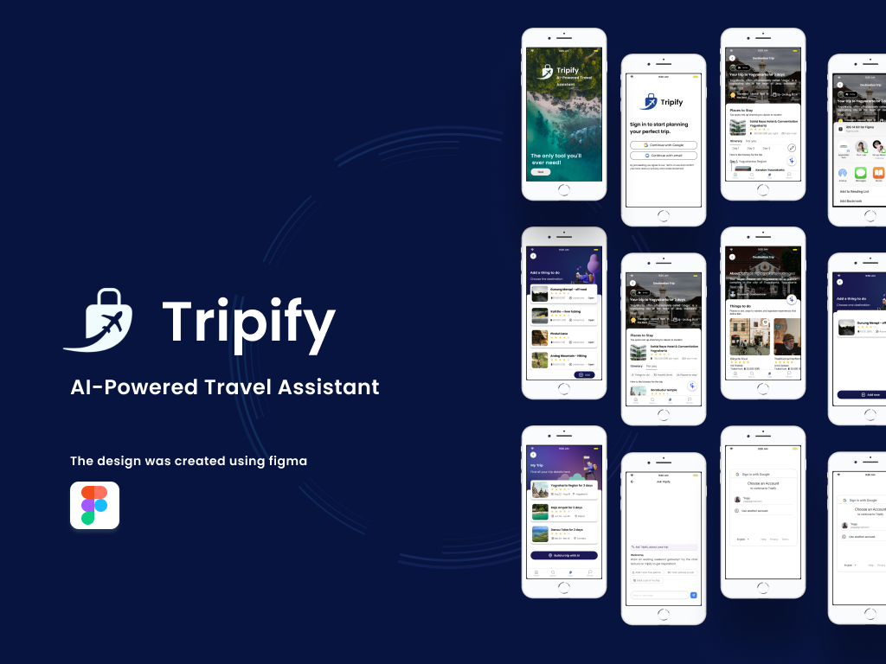
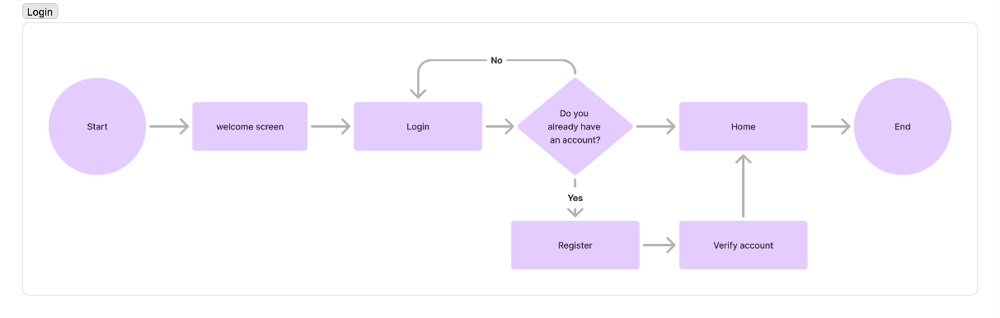

Tripify – AI-Powered Travel Assistant
Yoga Pratama
• July 2025
Tripify is an AI-powered travel assistant that helps users plan trips, discover destinations, and manage itineraries with ease.
Disclaimer:This project is a personal case study and is not affiliated with any company. It was awarded 5th place in the UI/UX Competition at Politeknik Negeri Bali 2024.
Overview
The Tripify application is a smart travel app designed to help users plan efficient and enjoyable trips. It is built using a Design Thinking approach to ensure that user needs and expectations are always the top priority.
Main Objectives
- Simplify Planning: Streamline the travel planning process with automatic itinerary features and relevant recommendations.
- Discover New Destinations: Help users explore unique and interesting destinations they may not have known before.
- Enhance Travel Experience: Provide comprehensive and up-to-date information about destinations, accommodations, and activities.
Design Process
To solve this challenge, we use the design thinking process as an approach to solving the case

- Emphatize: Conduct user research to understand the needs, pain points, and expectations of users in planning their trips.
- Define: Identify and clearly define the main problems that the Tripify application aims to solve based on user research findings.
- Ideate: Generate creative ideas for solutions that can address these problems effectively.
- Prototype:Develop an initial prototype of the application to gather user feedback.
- Testing: Conduct testing on the prototype to identify areas for improvement and refine the design.
User Flow
- User flow login: The login user flow in Tripify illustrates the step-by-step process for both existing and new users. It begins with the welcome screen, where users can choose to log in or register. Existing users proceed directly by entering their credentials, while new users are guided through registration and account verification via email. Once verified or logged in, all users are directed to the home/dashboard, gaining full access to the app’s features. This flow ensures a smooth, efficient, and user-friendly access experience. 
- Create itinerary: The create itinerary user flow in Tripify describes how users build and manage their travel plans. The process starts with selecting a destination search, followed by creating an itinerary that includes travel dates, companions, and budget. The system then generates a recommended plan, which users can review and confirm to save under “My Trip.” After saving, users are given the option to invite collaborators (friends or family) to co-edit the itinerary. Finally, the saved plans are accessible in My Trip, where users can view, edit, or delete them. This flow ensures flexibility, personalization, and collaborative planning for a better travel experience.
- Enhance Travel Experience:The view maps user flow in Tripify outlines how users explore detailed location information. It begins when a user selects or searches for a destination, leading to the destination page with general info such as images and descriptions. From there, users can access the detail destination section, which provides deeper insights including history, culture, attractions, and recommendations (restaurants, accommodations, activities). By choosing the maps option, users can view the destination’s location directly on the map. The process concludes with users returning to the previous page or the app’s home screen. This flow ensures easy navigation and contextual insights for travel planning.


Mockup
- Onboardin, this mockup showcases a series of welcome screens for the Tripify app, designed to introduce new users to its main features. Through engaging illustrations and clear messages, each page visually highlights the app's key functions, such as optimal route planning, personalized adventures, and local cuisine recommendations. The entire process aims to provide an informative and enjoyable first experience, guiding users with intuitive navigation.
- Login, this mockup showcases the login process flow for the Tripify application, designed to be intuitive and user-friendly. By highlighting the "Login with Google" option, users are guided through a series of clear stages, from account selection and password verification to the final confirmation. The overall clean design aims to provide a fast, secure, and efficient login experience, allowing users to access the application without difficulty..
- Dashboard, this mockup showcases the dashboard of the Tripify app, which functions as the main navigation hub for users. The flow begins on the main page where users can search for or discover destinations, then move to a detailed page ('About Location') for in-depth information, and finally use an interactive map ('Maps') for route planning. The entire design is crafted intuitively to provide quick access to relevant travel information, making it easier for users to plan their trips effectively.
- Itinerary, this mockup showcases the itinerary creation process in the Tripify app, a guided flow designed to simplify trip planning. Users progressively input essential details, starting from selecting a destination and dates, to choosing activity preferences and travel companions, and finally setting a budget. By systematically gathering this information, the app can generate a fully personalized travel plan tailored to the user's preferences.
- Create Itinerary, the Tripify create itinerary mockup illustrates an interactive flow for planning trips. Users can create and customize their travel plans through features such as adding activities, editing or deleting schedules, and receiving destination recommendations based on preferences. All plans are stored in the My Trip section, making management and future access easier. After traveling, users can leave reviews through the rating and review form pages, even adding photos to share personal experiences. Travel plans can also be shared with friends or family, while the Ask-Tripify feature allows users to seek direct assistance. Overall, this mockup delivers a complete experience, covering planning, customization, sharing, and trip evaluation.


Sample screens from Tripify